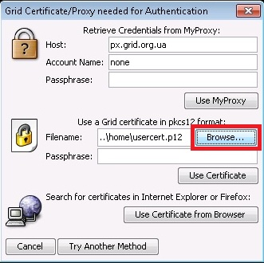
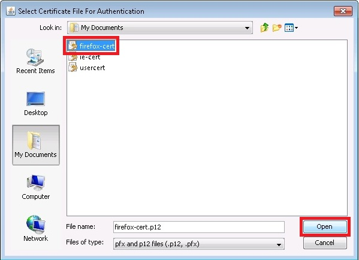
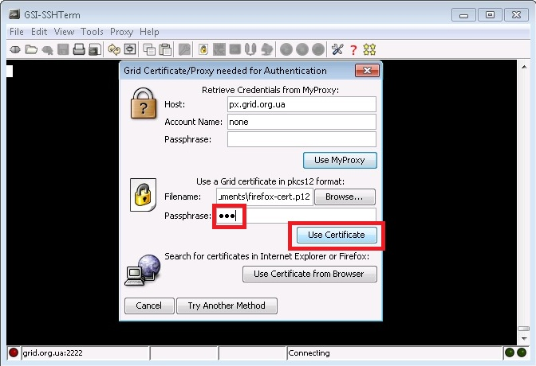
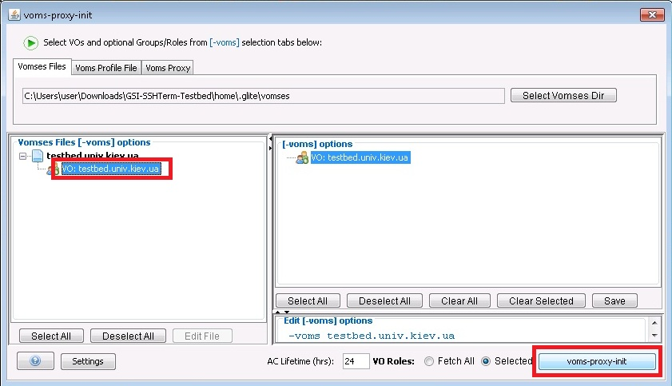
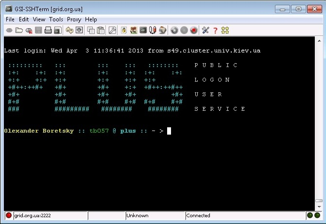

Підключення за допомогою експортованого сертифікату
¶
Крок 1:

Крок 2:
Оберіть сертифікат

Крок 3:
Введіть пароль

Крок 4:
Генерування проксі сертифікату з використанням ВОМС атрибутів

Крок 5:
Встановлене з’єднання

Grid Testbed
Навігація
Розгортання Grid Testbed
Using GSISSH
Встановлення Java
Перевірка змінних оточення Windows
Експорт сертифікату з браузеру Firefox
Експорт сертифікату з браузеру IE
Завантаження GSISSH-клієнта
Підключення до GSISSH-сервера
Підключення за допомогою експортованого сертифікату
Related Topics
Documentation overview
Using GSISSH
Previous:
Підключення до GSISSH-сервера
Швидкий пошук